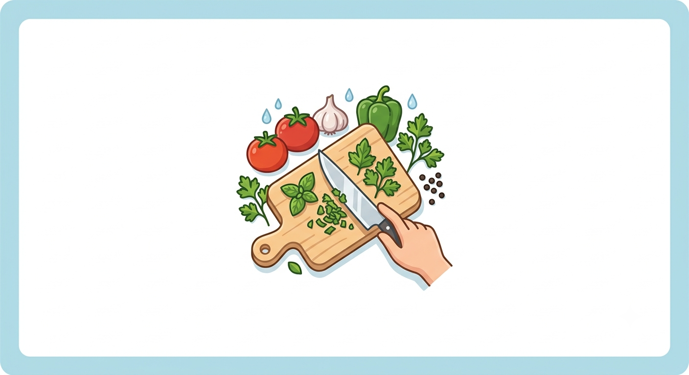

A Importância dos Ingredientes Frescos
Por: Sabrina de ramos colaço
Usar ingredientes da estação e frescos faz toda a diferença no sabor final do prato. Além de mais nutritivos, eles destacam os aromas naturais da comida.
Fonte: Guia Gastronômico